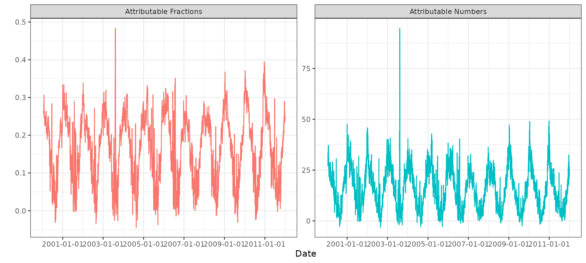
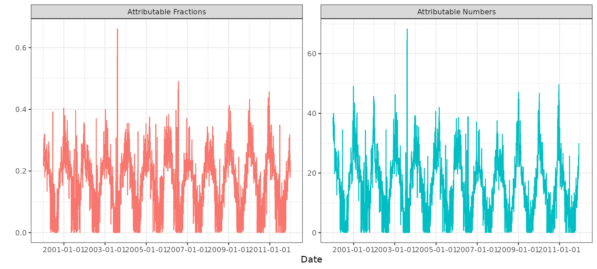
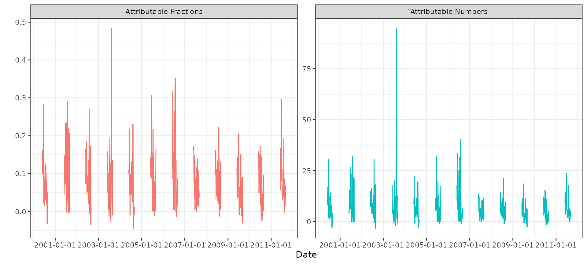

library(bdlnm)
library(dlnm)
#> This is dlnm 2.4.10. For details: help(dlnm) and vignette('dlnmOverview').
library(dplyr)
#>
#> Attaching package: 'dplyr'
#> The following objects are masked from 'package:stats':
#>
#> filter, lag
#> The following objects are masked from 'package:base':
#>
#> intersect, setdiff, setequal, union
library(tidyr)
library(stats)
library(splines)
library(utils)
library(ggplot2)
library(lubridate)
#>
#> Attaching package: 'lubridate'
#> The following objects are masked from 'package:base':
#>
#> date, intersect, setdiff, unionThis article provides a short tutorial on how to calculate
attributable measures using the attributable() function.
The built-in london dataset is used as an example to estimate mortality
attributable fractions and attributable numbers associated with
temperature among the population aged 75 years or older in London during
the period 2000–2012.
First, we prepare the data, construct the DLNM cross-basis, fit the Bayesian DLNM model, and estimate the minimum mortality temperature (MMT) used to center the risks when computing attributable measures. More detailed information about these steps can be found in the main vignette.
# Exposure-response and lag-response spline parameters
dlnm_var <- list(
var_prc = c(10, 75, 90),
var_fun = "ns",
lag_fun = "ns",
max_lag = 21,
lagnk = 3
)
# Cross-basis parameters
argvar <- list(
fun = dlnm_var$var_fun,
knots = quantile(london$tmean, dlnm_var$var_prc / 100, na.rm = TRUE),
Bound = range(london$tmean, na.rm = TRUE)
)
arglag <- list(
fun = dlnm_var$lag_fun,
knots = logknots(dlnm_var$max_lag, nk = dlnm_var$lagnk)
)
# Create crossbasis
cb <- crossbasis(london$tmean, lag = dlnm_var$max_lag, argvar, arglag)
# Seasonality of mortality time series
seas <- ns(london$date, df = round(8 * length(london$date) / 365.25))
# Prediction values (equidistant points)
temp <- round(seq(min(london$tmean), max(london$tmean), by = 0.1), 1)
# Ensure it falls inside the range of temperatures after rounding:
temp <- temp[temp >= min(london$tmean) & temp <= max(london$tmean)]
# Model
mod <- bdlnm(
mort_75plus ~ cb + factor(dow) + seas,
data = london,
family = "poisson",
sample.arg = list(seed = 432)
)
# compute MMT centering value using optimal_exposure
mmt <- optimal_exposure(mod, exp_at = temp)
#> Registered S3 method overwritten by 'crs':
#> method from
#> print.crs sf
cen <- mmt$summary[["0.5quant"]]
cen
#> [1] 18.9The MMT used to center the relative risks is 18.9ºC.
With all set, we can calculate attributable numbers and fractions. Gasparrini and Leone (2014) describe the methodology in detail: Attributable risk from distributed lag models.
We can compute attributable fractions and attributable numbers using the backward algorithm, which quantifies the current burden attributable to the set of exposure events experienced in the past:
attr_back <- attributable(
mod,
london,
name_date = "date",
name_exposure = "tmean",
name_cases = "mort_75plus",
cen = cen,
dir = "back"
)The output is a list containing posterior samples of attributable fractions and attributable numbers computed per day and for the full study period, together with summaries across posterior samples:
str(attr_back)
#> List of 8
#> $ af : num [1:4383, 1:1000] NA NA NA NA NA NA NA NA NA NA ...
#> ..- attr(*, "dimnames")=List of 2
#> .. ..$ : chr [1:4383] "2000-01-01" "2000-01-02" "2000-01-03" "2000-01-04" ...
#> .. ..$ : chr [1:1000] "sample1" "sample2" "sample3" "sample4" ...
#> $ an : num [1:4383, 1:1000] NA NA NA NA NA NA NA NA NA NA ...
#> ..- attr(*, "dimnames")=List of 2
#> .. ..$ : chr [1:4383] "2000-01-01" "2000-01-02" "2000-01-03" "2000-01-04" ...
#> .. ..$ : chr [1:1000] "sample1" "sample2" "sample3" "sample4" ...
#> $ aftotal : Named num [1:1000] 0.181 0.187 0.2 0.185 0.147 ...
#> ..- attr(*, "names")= chr [1:1000] "sample1" "sample2" "sample3" "sample4" ...
#> $ antotal : Named num [1:1000] 71799 74286 79188 73419 58128 ...
#> ..- attr(*, "names")= chr [1:1000] "sample1" "sample2" "sample3" "sample4" ...
#> $ af.summary : num [1:4383, 1:6] NA NA NA NA NA NA NA NA NA NA ...
#> ..- attr(*, "dimnames")=List of 2
#> .. ..$ : chr [1:4383] "2000-01-01" "2000-01-02" "2000-01-03" "2000-01-04" ...
#> .. ..$ : chr [1:6] "mean" "sd" "0.025quant" "0.5quant" ...
#> $ an.summary : num [1:4383, 1:6] NA NA NA NA NA NA NA NA NA NA ...
#> ..- attr(*, "dimnames")=List of 2
#> .. ..$ : chr [1:4383] "2000-01-01" "2000-01-02" "2000-01-03" "2000-01-04" ...
#> .. ..$ : chr [1:6] "mean" "sd" "0.025quant" "0.5quant" ...
#> $ aftotal.summary: Named num [1:6] 0.1756 0.0172 0.141 0.1762 0.2105 ...
#> ..- attr(*, "names")= chr [1:6] "mean" "sd" "0.025quant" "0.5quant" ...
#> $ antotal.summary: Named num [1:6] 69577 6825 55886 69832 83406 ...
#> ..- attr(*, "names")= chr [1:6] "mean" "sd" "0.025quant" "0.5quant" ...Using ggplot2 we can visualize the time series of daily
attributable fractions and attributable numbers:
london |>
mutate(
"Attributable Fractions" = attr_back$af.summary[, "0.5quant"],
"Attributable Numbers" = attr_back$an.summary[, "0.5quant"]
) |>
pivot_longer(
c("Attributable Fractions", "Attributable Numbers"),
names_to = "name",
values_to = "val"
) |>
ggplot(aes(x = date, y = val, color = name)) +
facet_wrap(~name, scales = "free_y") +
geom_line() +
scale_x_date(date_breaks = "2 years") +
labs(x = "Date", y = "") +
guides(color = "none") +
theme_bw()
#> Warning: Removed 42 rows containing missing values or values outside the scale range
#> (`geom_line()`).
The total attributable fraction and attributable number over the full period are:
options(scipen = 999)
rbind(
"Attributable fraction" = attr_back$aftotal.summary,
"Attributable number" = attr_back$antotal.summary
) |>
knitr::kable(digits = 2)| mean | sd | 0.025quant | 0.5quant | 0.975quant | mode | |
|---|---|---|---|---|---|---|
| Attributable fraction | 0.18 | 0.02 | 0.14 | 0.18 | 0.21 | 0.18 |
| Attributable number | 69576.99 | 6825.41 | 55886.47 | 69831.84 | 83406.12 | 71036.15 |
Alternatively, we can use the forward algorithm, which quantifies the future burden attributable to a given exposure event:
attr_forw <- attributable(
mod,
london,
name_date = "date",
name_exposure = "tmean",
name_cases = "mort_75plus",
cen = cen,
dir = "forw"
)We can plot the time series of daily attributable fractions and attributable numbers based on the forward algorithm:
london |>
mutate(
"Attributable Fractions" = attr_forw$af.summary[, "0.5quant"],
"Attributable Numbers" = attr_forw$an.summary[, "0.5quant"]
) |>
pivot_longer(
c("Attributable Fractions", "Attributable Numbers"),
names_to = "name",
values_to = "val"
) |>
ggplot(aes(x = date, y = val, color = name)) +
facet_wrap(~name, scales = "free_y") +
geom_line() +
scale_x_date(date_breaks = "2 years") +
labs(x = "Date", y = "") +
guides(color = "none") +
theme_bw()
#> Warning: Removed 21 rows containing missing values or values outside the scale range
#> (`geom_line()`).
The total attributable fraction and attributable number over the full period (forward algorithm) are:
rbind(
"Attributable fraction" = attr_forw$aftotal.summary,
"Attributable number" = attr_forw$antotal.summary
) |>
knitr::kable(digits = 2)| mean | sd | 0.025quant | 0.5quant | 0.975quant | mode | |
|---|---|---|---|---|---|---|
| Attributable fraction | 0.17 | 0.02 | 0.14 | 0.17 | 0.21 | 0.18 |
| Attributable number | 68669.46 | 6769.00 | 55119.80 | 68933.85 | 82474.45 | 70152.26 |
Finally, we can restrict the calculation to specific time periods using a filter variable. For example, we can compute attributable measures only for summer months:
slondon <- london |>
mutate(
summer = case_when(
month(date) >= 6 & month(date) <= 8 ~ 1,
.default = 0
)
)
attr_summer <- attributable(
mod,
slondon,
name_date = "date",
name_exposure = "tmean",
name_cases = "mort_75plus",
name_filter = "summer",
cen = cen,
dir = "back"
)
#> Warning: Attributable fractions and numbers will only be calculated for time points
#> filtered by "summer"We can plot the time series of daily attributable fractions and attributable numbers for summers only:
slondon |>
filter(summer == 1) |>
mutate(
"Attributable Fractions" = attr_summer$af.summary[, "0.5quant"],
"Attributable Numbers" = attr_summer$an.summary[, "0.5quant"]
) |>
pivot_longer(
c("Attributable Fractions", "Attributable Numbers"),
names_to = "name",
values_to = "val"
) |>
ggplot(aes(x = date, y = val, color = name, group = year)) +
facet_wrap(~name, scales = "free_y") +
geom_line() +
scale_x_date(date_breaks = "2 years") +
labs(x = "Date", y = "") +
guides(color = "none") +
theme_bw()
The total attributable fraction and number, only for summers, are:
rbind(
"Attributable fraction" = attr_summer$aftotal.summary,
"Attributable number" = attr_summer$antotal.summary
) |>
knitr::kable(digits = 2)| mean | sd | 0.025quant | 0.5quant | 0.975quant | mode | |
|---|---|---|---|---|---|---|
| Attributable fraction | 0.09 | 0.01 | 0.06 | 0.09 | 0.11 | 0.09 |
| Attributable number | 33745.84 | 3852.23 | 25754.77 | 33721.27 | 41702.27 | 33704.74 |